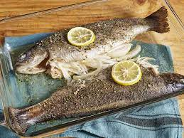

Lasagna

This rainbow trout recipe is very easy and simple and its flavor is just awesome!
Here is a list of the ingredients you'll need:
- 2 teaspoons olive oil, divided
- 2 whole rainbow trout, gutted and cleaned, heads and tails still on
- ¼ teaspoon dried dill weed
- ¼ teaspoon dried thyme
- ½ large onion, sliced
- 2 thin slices lemon (Optional)
- 2 tablespoons hot water
- ground black pepper to taste
Steps:
- Preheat the oven to 400 degrees F (200 degrees C). Grease a 9x13-inch baking dish with 1 teaspoon olive oil.
- Place trout in the prepared baking dish and coat with remaining olive oil. Gather the seasoning ingredients.
- Season inside and outside of fish with dill, thyme, and salt. Stuff each fish with onion slices; grind pepper on top. Place 1 lemon slice on each fish.
- Bake in the preheated oven for 10 minutes; add hot water to dish. Continue baking until fish flakes easily with a fork, about 10 minutes more.
- Serve hot and enjoy!